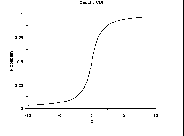
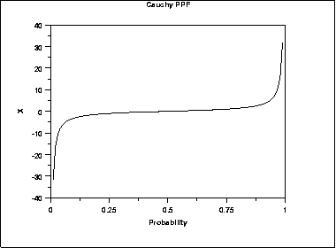
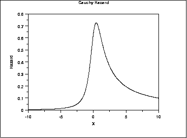
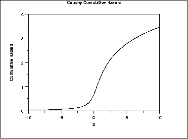
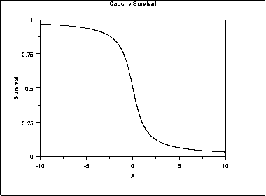
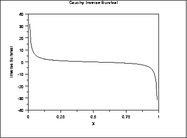

1.3. EDA Techniques
1.3.6. Probability Distributions
1.3.6.6. Gallery of Distributions
1.3.6.6.3. |
Cauchy Distribution |
\( f(x) = \frac{1} {s\pi(1 + ((x - t)/s)^{2})} \)
where t is the location parameter and s is the scale parameter. The case where t = 0 and s = 1 is called the standard Cauchy distribution. The equation for the standard Cauchy distribution reduces to
\( f(x) = \frac{1} {\pi(1 + x^{2})} \)
Since the general form of probability functions can be expressed in terms of the standard distribution, all subsequent formulas in this section are given for the standard form of the function.
The following is the plot of the standard Cauchy probability density function.

\( F(x) = 0.5 + \frac{\arctan{(x)}} {\pi} \)
The following is the plot of the Cauchy cumulative distribution function.

\( G(p) = -\cot{(\pi p)} \)
The following is the plot of the Cauchy percent point function.

\( h(x) = \frac{1} {(1 + x^2)(0.5 \pi - \arctan{x})} \)
The following is the plot of the Cauchy hazard function.

\( H(x) = -\ln \left( 0.5 - \frac{\arctan{x}}{\pi} \right) \)
The following is the plot of the Cauchy cumulative hazard function.

\( S(x) = 0.5 - \frac{\arctan{(x)}} {\pi} \)
The following is the plot of the Cauchy survival function.

\( Z(p) = -\cot{(\pi (1 - p))} \)
The following is the plot of the Cauchy inverse survival function.

| Mean | The mean is undefined. |
| Median | The location parameter t. |
| Mode | The location parameter t. |
| Range | \( -\infty \mbox{ to } \infty \) |
| Standard Deviation | The standard deviation is undefined. |
| Coefficient of Variation | The coefficient of variation is undefined. |
| Skewness | The skewness is 0. |
| Kurtosis | The kurtosis is undefined. |
The mean and standard deviation of the Cauchy distribution are undefined. The practical meaning of this is that collecting 1,000 data points gives no more accurate an estimate of the mean and standard deviation than does a single point.